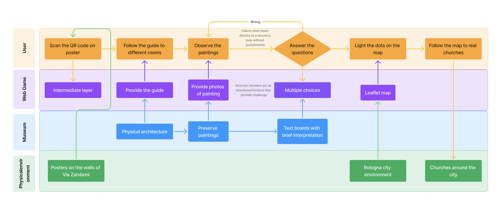

Design Brief
This paper follows the course template.
The Secret Next Door
A Hybrid Exhibition Experience for the Pinacoteca Nazionale di Bologna
Authors
Polyxeni Chasanai · Kübra Topçuoğlu · Yixuan Qu · Saya Saito
Affiliation / Course / Institution
Digital Heritage and Multimedia — Group GGU (Global Girlies United)
Author emails
Polyxeni Chasanai — add email
Kübra Topçuoğlu — kubra.topcuoglu@studio.unibo.it
Yixuan Qu — yixuan.qu@studio.unibo.it
Saya Saito — saya.saito@studio.unibo.it
Abstract
Keywords
1. Introduction and Design Problem
1.1 Context of the project
The Pinacoteca Nazionale di Bologna is the national art gallery of Bologna. It sits in the quiet university quarter near Via Zamboni, inside an old Jesuit building, and it holds some of the most important works of Italian and Bolognese art: Raphael's Ecstasy of Saint Cecilia, dramatic Baroque scenes by Guido Reni, and paintings by the Carracci family, Guercino, Parmigianino and others.
But there is one fact that most visitors would ignore: these paintings were made for different contexts from the gallery walls. About 200 years ago, between 1797 and 1810, Napoleon's rule closed the churches and convents of Bologna. Nearly a thousand paintings were taken from those churches and brought together into one building, and that building became the Pinacoteca. So the art is world-class, but the gallery is almost empty. In 2023 it reached close to 100,000 visitors, which is very low for a national gallery that owns a Raphael. Thousands of students walk past the door every day and never go inside.
Our project, The Secret Next Door, works with this real story. It tries to bring people in, especially the students who are right next door, and to give every painting back its story and its place in the city.
1.2 Main pain points / problems the project aims to solve
| Pain point / problem | Who is affected? | Why does it matter for the design? |
|---|---|---|
| The gallery is "hidden" and under-visited. It feels calm and empty, and people walk past without entering. | The museum itself, and the local students and tourists who never come in. | The design needs a strong, simple reason to pull people through the door from the street. |
| The labels give the story and the facts, but they are written in an academic way that expects you to already know art history. People with no art background feel lost and left out. | Students and visitors with no art background. | The design needs a simple, friendly guide that explains the works in everyday words, with no art knowledge needed. |
| The paintings feel silent and disconnected. They look like random old pictures and are easy to forget. | All visitors, especially people with no art background. | The design needs storytelling that gives each work its own story and links the works together. |
| The real story is not told: these works were taken from real churches across Bologna, but nobody explains this. | The museum's heritage and the city's own memory. | The design should reconnect each painting to its original home and to the city. |
2. Related Work, Benchmarks and Existing Solutions
2.1 Existing references, comparable projects and technologies
| Reference / project / technology | What it does well | Gap for our project |
|---|---|---|
2.2 Gap statement: what existing solutions do not solve
3. Method and Design Process
3.1 Design method used
We followed a user-centred and iterative design process. First we studied the museum, its collection and its real problems, using the museum's own pages, news articles and visitor reviews. Then we did a PACT analysis (People, Activities, Context, Technologies) to understand who the audience is and where the experience happens. From this we built one clear concept, "bring the paintings home", and turned it into an experience loop and a few simple interaction rules. After that we wrote the full experience as a branching story in Twine, screen by screen, and designed the visual interface in Figma. Finally we tested the flow by walking through it as a visitor would, and we fixed the steps that felt weak or confusing.
The table below only names each activity and points to the section where its result is shown. The actual diagrams (user flowchart, swimlane chart, user journey map) are placed in Sections 6 and 7, each as a figure with a caption.
| Design activity | Output produced | Where it appears |
|---|---|---|
| Concept design | One-sentence concept (the museum is the memory of Bologna's lost churches, and the visitor brings each painting home), with the audience, the context and the goals. | Section 4 |
| Experience loop | The cycle that repeats for every painting: approach, hear its story, answer one looking-question, get a fact, then light up its church on the map. | Section 5 |
| Interaction rules | Find the painting, answer one looking-question (hint and retry if wrong), unlock its church, fill the city map, reach 5 of 5, and share the result. | Section 5 |
| User flowchart | The step-by-step screen flow, from the street poster to the finale. | Section 6 |
| Swimlane flowchart | The same flow split between the actors: the visitor, the web app on the phone, and the museum. | Section 6 |
| User journey map | The experience over time, with the visitor's actions, emotions and touchpoints, from discovery to sharing. | Section 7 |
3.2 Data / materials used
While designing the project we worked with a few kinds of material. From class we used the PACT analysis and persona cards to study the audience. As museum sources we used the official Pinacoteca pages (pinacotecabologna.cultura.gov.it) for each painting, the museum's note about the 2024-2025 room redesign, and its public visitor numbers. We also used our own observations: students pass the museum on Via Zamboni every day but rarely go in, the rooms feel quiet and almost empty, and the labels are written in an academic way that is hard for people with no art background. For background we read news and art articles about the Napoleonic closures of the churches and about the paintings, and we collected photos of the five works and their original churches. From these materials we then built the concept, the interaction rules, the branching story in Twine and the interface in Figma.
4. Design Brief
| Title | The Secret Next Door: A Hybrid Exhibition Experience for the Pinacoteca Nazionale di Bologna. |
|---|---|
| Type of application / experience | A hybrid exhibition experience. It is a story-based museum trail that runs in the web browser (a PWA, no download), using street posters, QR codes, on-screen text and animations inside the museum and at the original churches. |
| Primary audience | University students in Bologna, aged 18 to 28, who pass the museum every day but never go in. |
| Secondary audience | International tourists and young travellers, aged 18 to 40, who need clear, engaging and story-based context. |
| Primary persona | Giulia, 22, a Bologna university student. She walks down Via Zamboni every day, lives on her phone, has little free time and no art background. She has always thought the gallery is "not for her", and the academic labels make her feel lost. |
| Secondary persona | Liam, 28, a tourist on a short city trip. He is curious about local culture, but he did not even know this gallery exists, because it is off the main tourist path. He likes things that are quick, clear and easy to share. |
| Project focus / context | A quiet university quarter; an indoor gallery with academic labels and short visit times; many original churches spread across the city; and a museum that is already redesigning its rooms to be more accessible. |
Star assets
Our project uses three types of star asset. The first type is the five star paintings (Exhibits). The second type is the five original churches and the historic building where the paintings used to live (Location). The third type is the fame of the gallery, because it owns a real Raphael (Fame).
1. Exhibits: the five star paintings. Five famous works that were taken from real Bologna churches. Each one becomes a "home" on the Map of Exiles.
| Star asset | Short description | Media / image |
|---|---|---|
| Raphael, Ecstasy of Saint Cecilia | The gallery's most famous work, and the face on the street poster. A woman lets the music of the world fall so she can listen to the music of heaven. It was taken from the church of San Giovanni in Monte. |  |
| Ludovico Carracci, Conversion of Saint Paul (Conversione di Saulo) | A scene full of movement: Saul falls from his horse, blinded by a light from the sky, and rises again as Paul. It was taken from the church of San Francesco. |  |
| Guercino, Investiture of Saint William (Vestizione di San Guglielmo) | A duke kneels down and takes off his shining armour to be dressed as a simple monk. It was taken from the church of Santi Gregorio e Siro. |  |
| Vitale da Bologna, Stories of Saint Anthony Abbot (Storie di Sant'Antonio Abate) | A small gold panel full of tiny figures, almost 700 years old and one of the oldest works in the whole museum. It was taken from the church of Sant'Antonio Abate. |  |
| Guido Reni, Massacre of the Innocents (Strage degli innocenti) | A dramatic Baroque scene full of fear, with two small angels holding palm leaves at the top as a sign of hope. It was taken from the Basilica di San Domenico. |  |
2. Location: the original churches and the historic building. The five churches where the paintings used to live, and the old Jesuit building near Via Zamboni that is now the gallery. These real places are the "homes" the visitor lights up on the Map of Exiles.
| Star location | Painting that lived there |
|---|---|
| San Giovanni in Monte (church) | Raphael, Ecstasy of Saint Cecilia |
| San Francesco (church) | Ludovico Carracci, Conversion of Saint Paul |
| Santi Gregorio e Siro (church) | Guercino, Investiture of Saint William |
| Sant'Antonio Abate (church) | Vitale da Bologna, Stories of Saint Anthony Abbot |
| Basilica di San Domenico (church) | Guido Reni, Massacre of the Innocents |
| The historic building: the old Jesuit palace near Via Zamboni, now the Pinacoteca | All five paintings live here today |
3. Fame: Raphael and the Ecstasy of Saint Cecilia. The gallery owns a real Raphael, one of the most famous artists in the world. His Ecstasy of Saint Cecilia is the star face on the street poster and the strongest reason to come in.
Institution & goals
| Institution / client | Institutional goals | Audience goals |
|---|---|---|
| Pinacoteca Nazionale di Bologna. |
1. Make its world-class collection known, visited and enjoyed by everyone, instead of staying a hidden secret. 2. Increase the accessibility and enjoyability of the rooms, continuing the 2024-2025 redesign, and finally reach the student audience next door. |
1. Get a clear reason to come in and an easy way to understand the works, with no art background needed. 2. Understand the works through a clear, simple guide and feel a real connection between the art and the city. |
Audience: motivations, barriers, capabilities, devices
| Audience | Motivations | Barriers | Capabilities | Devices |
|---|---|---|---|---|
| Primary audience (students) | 1. Curiosity about a "secret" right next to campus. 2. A short, fun and free activity they can share with friends. |
1. They feel the gallery is "not for them" and a bit boring (Irrelevant). 2. They have no art background, so the labels feel too academic and hard to follow (Educationally disadvantaged). |
1. Very comfortable with smartphones and apps. 2. Used to QR codes and mobile web guides. 3. Quick to learn new mobile mini-experiences. |
1. Their own smartphone. 2. A museum tablet, if they prefer. |
| Secondary audience (tourists) | 1. Interest in real local culture and stories. 2. Nice photos and a fun result to remember the visit. |
1. They do not know the gallery exists, because it is off the main tourist path, so they walk past it (Hidden). 2. Short visit time, so they need something quick and clear. |
1. Used to digital guides and museum apps. 2. Comfortable using a phone guide and following a map. 3. Able to walk a short city trail. |
1. Their own smartphone. 2. A museum tablet. |
5. Design: Concept and Mechanics
5.1 Main idea of the project / user experience
The big idea is that every painting in the Pinacoteca is like an exile. Long ago it lived in a real church in Bologna; during the Napoleonic period the churches were closed and the works were carried into one building, and the city slowly forgot. The Secret Next Door uses this true story.
Outside, on the streets and at the old churches, a faded poster with a QR code invites you in. When you open it on your phone, a short text from the painting appears on the screen: "I used to live here. They took me away. Come and find me." Inside, a web guide, with no app to download, gives each painting its own story in simple words: which church it came from, who made it, and why it is here now. The visitor walks from work to work, looks closely at the real painting, answers one easy question about a detail, and "brings the painting home". Each time, a new light appears on a Map of Exiles. Step by step the map fills up with the city's lost churches. The visitor is not a passive tourist anymore: they become the person who finally remembers the city's forgotten art.
5.2 Winning / completion condition and scoring
This is an exhibition experience, not a competitive game, so there are no points to collect. The "win" is simply uncovering the secret. The mission is given at the very start: "Five paintings were taken from real churches. Find them all and uncover the secret." The completion condition is reaching 5 of 5 homes found, which means waking all five paintings and lighting every dot and line on the Map of Exiles. Progress is always visible through a simple counter that climbs from 0/5 to 5/5, together with the growing map, so the visitor can see how close they are.
Each painting is "unlocked" by answering one easy looking-question about a detail in the work. A wrong answer is never a punishment: it just gives a gentle hint and lets the visitor try again, so nobody gets stuck. When all five homes connect, the finale reveals the full secret and gives the visitor a shareable result card and a personal number on a public counter ("you are the 2,148th person to find the secret this month"). There is also one optional extra goal, the "homecoming": going outside to a real church, where the phone shows the painting back in its old place on the now-empty wall.
6. User Flow, Interaction and Hybrid System
6.1 General user flow
The user flow is a step-by-step representation of the actions a user takes to achieve specific tasks of awaking all the five paintings and highlighting their dark dots on Bologna map, considering all possibilities and decisions, designed to smoothly guide the visitor from external discovery through a structured, interactive gaming experience. The flow begins where the user initiates the experience ("Play the story"), in which the user is primarily designed as a university student walking down the via Zamboni. The first action is to "Check the poster" located on the walls. This presents the first decision point: whether to "Scan the QR code on the poster." If the user chooses to "Walk away", a later prompt to "See the poster again and scan the QR code" acts as a secondary trigger, ensuring they eventually "Enter the Pinacoteca." Then the user faces a decision to "Check the map of Bologna." If they choose "Yes," they are introduced to the exile map where all the dots are still dark, visually establishing the mission and creating forward curiosity. If they choose to "Skip," they bypass this context but still proceed directly to the core activity. The experience then transitions into the Core Game Loop, which is a repeated cycle of actions, decisions, feedback, and consequences that structures gameplay. The user must "Follow the guide to the exhibition room," "Stand in front of the painting," and "Look at the painting carefully." This observational task leads to understand the meaning of paintings, and by clicking on different choices of "Answer the question", the user gets immediate feedback. Incorrect answers cause no punishment but just trigger a recovery loop where the user is prompted to look again at the highlights of painting and retry. Upon a "Correct" answer, the user proceeds to "Bring the painting back home" and then face a decision to "Set it on the map." Selecting "Yes" provides visual feedback as they "Check the new light on the map," rewarding their insightful comprehension. Skipping this step simply pushes them forward to the next painting. When all the five tasks are completed, the user enters the Resolution Phase, receiving the result card, which validates their effort. This opens up the social layer, presenting a decision to "Share with friends" or "Keep the secret." Finally, the user is offered an optional physical-world extension: to go to the original church. Whether they choose "Yes" or "Next time," the flow reaches the "End / Start over" terminal point, completing the hybrid experience while offering the possibility to play again this game.

6.2 Swimlane flowchart: actors, responsibilities, decisions
The swimlane flowchart describes interactions between four primary components: (1) User: Represents the participant, whose responsibilities span both physical and digital layers. (2) Web Game: Represents the digital layer of Twine application. Its responsibilities include acting as the intermediate layer, providing the digital guide, providing photos of the painting and multiple choices for the interaction, and rendering the digital map. (3) Museum: The indoor institutional space provides the physical architecture, preserving the actual paintings, and maintaining the text boards with brief interpretations for the visitors. (4) Urban environment: Represents the broader urban context of Bologna, providing the external spatial anchors, including the initial triggers (posters on the walls of Via Zamboni) and the final physical destinations (the Bologna city environment and churches around the city). Failure States and Recovery: In this project, traditional punishing failure states have been intentionally excluded. As annotated in the diagram, incorrect answers in the multiple-choice questions act as intentional frictions that provide challenge and prevent the loop from becoming too simple. If the user selects a wrong answer, the system triggers a recovery loop without punishments. The user is gently redirected back to the "Observe the paintings" step. This ensures that the failure state is temporary, educational, and keeps the visitor actively engaged in the process of meaning-making.

6.3 Interaction description and categories
The project relies on hybrid experience design, combining various interaction modalities. It constantly pushes the user's attention back and forth between the screen and the real world through the following categories: Device-Based Interaction: The interaction is facilitated through the digital interface to make selections and read text. Physical Navigation: The user engages in offline embodiment, which requires the body indirectly to navigate the physical gallery spaces. Feedback and Interaction Fidelity: The system provides clear, immediate confirmation of an action through visual cues on the digital map.
6.4 Hybrid and technological layers
| Layer | Software / hardware / material | Function |
|---|---|---|
| Physical layer | Focuses on the material elements of the permanent exhibition of Pinacoteca, including pure material environments and material artifacts used as structural interaction anchors. | Acts as the initial trigger (street posters) and the ultimate focal point of the experience (the physical canvas paintings). |
| Digital layer | Includes Digital Media Formats and cross-platform UI panels. Main tools applied are Twine, Figma and HTML web page. | Delivers the Twine narrative and Leaflet map without requiring downloads, relying on immediate availability and zero installation barriers. |
| Museum layer | Integrates the physical space where the media is accessed and the original context of the heritage assets. | Provides the spatial container, the historical authority, and the walking environment for the interactive trail. |
| Social layer | Multimedia design facilitates social communication. | Encourages social communication, turning the visitor's accomplishment into an invitation for the next student outside, calling for a re-awareness of the city public and historical memory. |
7. User Experience as User Journey
7.1 User journey narrative
The journey begins with state curiosity, specifically forward curiosity, which is triggered by unpredictability or lack of desired information. For example, Giulia, our primary persona, is walking down Via Zamboni when a poster catches her eye. It speaks directly to her: "I used to live here. They took me away." Intrigued, she scans the QR code. Entering the museum, the design places a playful and a bit mysterious style to proceed. As she follows the digital clues to locate the physical paintings, Giulia engages in meaning-making, an active process where individuals reappraise or revise a series of events. The core loop relies on a structured reward loop: awareness of a knowledge gap leads to curiosity, followed by information-seeking behavior, the acquisition of new knowledge as a reward, and an expanded knowledge base. She looks closely at the paintings to answer the game's question. When she gets it right, the interactive map on her screen lights up. The order of the hybrid exhibition is well-designed: The first painting as the most famous and precious one in the gallery can easily attract user’s attention, the other four works are arranged chronologically, aligning with the actual guidance in physical world, in order to facilitate user journey and to avoid possible fatigue on the way. By the time the user finds the 5th painting, she feels a sense of completion. For the conclusion, the design uses the final output as a resolution, not just an end screen. The final screen gives her a glowing digital card, which she screenshots to share with friends. After this game, the user will have a map with all the 5 churches highlighted, which could foster new curiosity to explore the historical sites that carry the city’s memory.

| Phase | User action | Touchpoint | Emotion | Pain point | Design response |
|---|---|---|---|---|---|
| Before / discovery | Scans the QR code on the street poster. | Street poster, smartphone camera. | Experiences forward curiosity, which is triggered by unpredictability or lack of desired information. | Might ignore it worrying that requires an app download. | Web applications feature zero installation barriers and immediate platform-agnostic use via a URL or QR code. |
| Onboarding | Reads the intro text and walks into the museum. | Web app intro screen, museum entrance. | Intrigued, ready to explore. | Paying for entry or feeling intimidated by the museum environment. | Clear, simple mission statement that empowers the user. |
| Mission / goals | Looks for the specific painting described. | Web app clues, museum rooms. | Focused, engaged, feeling like a detective. | Getting lost or distracted in the large, quiet gallery rooms. | Simple directions provided in the Twine text. |
| Capture / interaction | Observes the physical canvas and answers the question. | The real painting, phone screen. | Challenged but capable. | Frictions provide challenge by using constraints like incomplete information. | Provide descriptive instructions and immediate hints upon failure. |
| Feedback / scoring | Sees the digital map update. | Leaflet map, Twine text. | Feels enjoyment and focus. | The map could be confusing or too small to read on a phone. | High-contrast map design (grey/gold), locked zoom. |
| After experience | Receives and shares the digital card and complete map, which provides detailed information of each painting and link to be clicked to explore more. | Final Twine screen, social media apps, Pinacoteca official website | Proud, connected to the city, eager to show friends. | Forgetting the experience quickly after leaving the building. | Use the final output as a resolution, not just an end screen |
Interactive story
8. Response to Pain Points and Innovation
| Pain point (Section 1) | Design solution | Expected effect |
|---|---|---|
8.1 Innovation beyond the state of the art
9. Conclusion
150–250 words: project, contribution, limitations, next steps.
Acknowledgments and Team Roles
| Team member | Role in project design | Role in writing the paper |
|---|---|---|
| Polyxeni Chasanai | Visual Designer | |
| Kübra Topçuoğlu | Narrative Concepts Designer · Prototype Designer / Technical Lead | Sections 1, 3, 4 and 5 |
| Yixuan Qu | Experience & Interaction Designer | Section 6 and 7 |
| Saya Saito | Research & Content Lead |
References
Add publications in alphabetical order, with a consistent style.
Web links
Appendix: Design Brief Summary
The short paragraph form of the brief (one paragraph that summarises everything above).